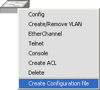
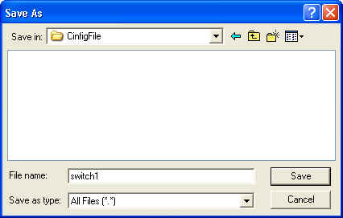

การใช้งานโปรแกรมในการออกแบบเครือข่าย การคอนฟิกสวิตช์ การคอนฟิกเราเตอร์ การสร้างค่าติดตั้งสวิตช์และเราเตอร์ การนำค่าติดตั้งที่ได้ไปใช้งาน
การสร้างค่าติดตั้งสวิตช์และเราเตอร์
ขั้นที่ 1 |
สร้าง configuration file โดยเลือกที่เมนู Create Configuration File ดังรูปที่ 43 |

รูปที่ 43 แสดงการใช้งานเมนู Create Configuration File เพื่อสร้างค่าติดตั้งของสวิตช์
ขั้นที่ 2 |
เลือก directory ที่ต้องการเก็บไฟล์และตั้งชื่อไฟล์ที่สร้างขึ้น ในที่นี้ชื่อ switch1 ดังรูปที่ 44 |

รูปที่ 44 แสดงการบันทึกค่าติดตั้งของสวิตช์
Configuration File ที่ได้จากโปรแกรมเป็นไฟล์ที่มีนามสกุลเป็น .text ดังนั้นสามารถเปิดได้จากโปรแกรมสำหรับสร้างเอกสารทั่วไป |